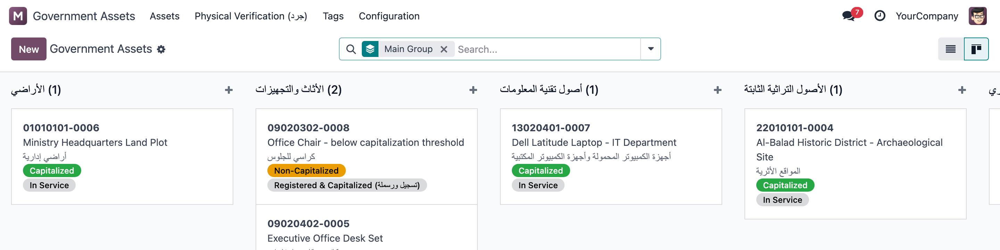
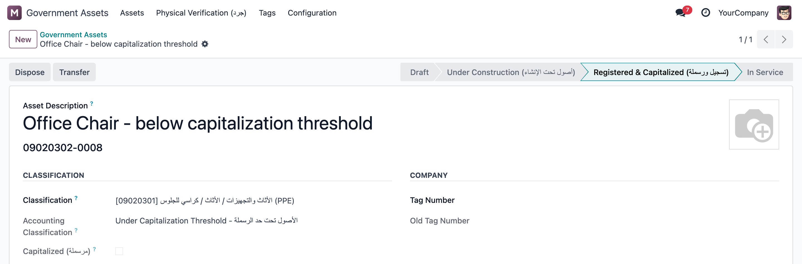
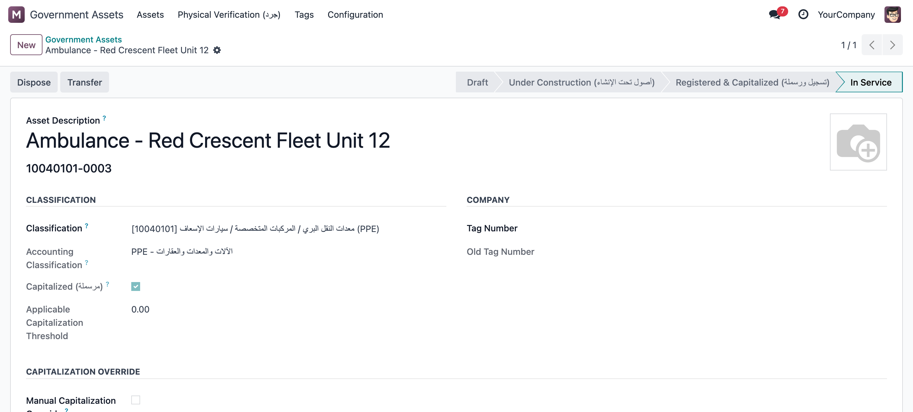
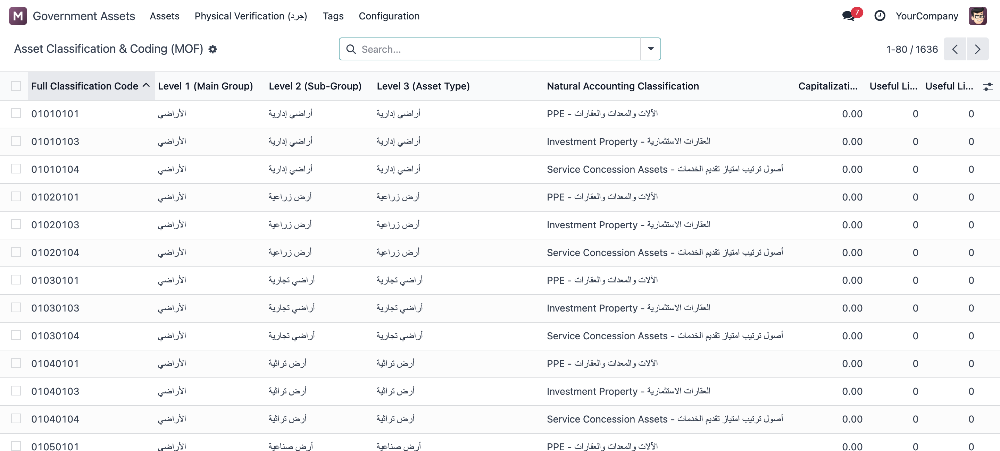
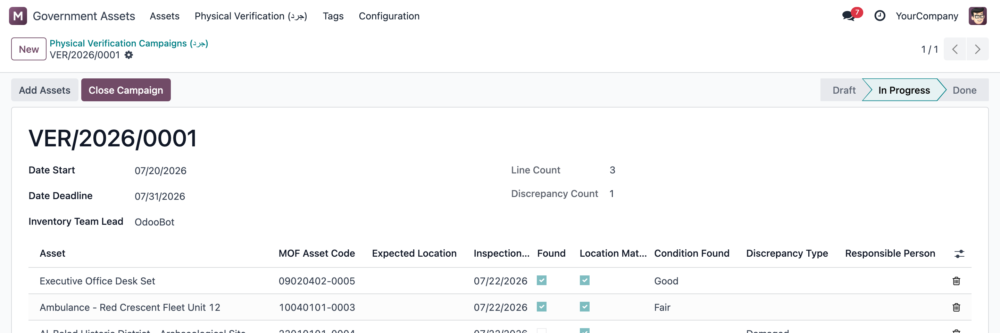

تصنيف وترميز رسمي كامل (أكثر من 1600 كود معتمد)، وتحديد تلقائي للأصول المرسملة وغير المرسملة حسب حد الرسملة الرسمي لكل نوع أصل، استهلاك دقيق، بطاقات QR، وحملات جرد ميداني — كل هذا داخل أودو مباشرة.
Saudi Government Fixed Asset Management — MOF-compliant classification, coding & capitalization

تحديد المرسملة (أخضر) والغير مرسملة (برتقالي) تلقائيًا حسب حد الرسملة الرسمي لكل تصنيف
دليل وزارة المالية «الدليل الشامل لحصر وتقييم الأصول للجهات الحكومية» يفرض تصنيفًا وترميزًا دقيقًا لكل أصل حكومي، وتفرقة واضحة بين الأصول المرسملة (التي تُرسمل وتُستهلك) والأصول غير المرسملة (التي تقل تكلفتها عن حد الرسملة المعتمد لنوعها، فتُصرف كمصروف فورًا لكنها تبقى مرمّزة ومتابَعة في سجل رقابي). القيام بهذا يدويًا عبر جداول إكسل معرّض للخطأ ولا يصمد أمام المراجعة. هذا التطبيق ينفّذ الآلية كاملة داخل أودو: يختار المستخدم تصنيف الأصل، والنظام يحدد تلقائيًا هل هو مرسملة أم لا، ويولّد كود الأصل الرسمي، ويبني جدول الاستهلاك ضمن حدود الأعمار الإنتاجية المعتمدة — دون أي جدول خارجي أو حساب يدوي.
| التصنيف والترميز الرسمي | أكثر من 1600 كود تصنيف معتمد من وزارة المالية، محمّلة مسبقًا وجاهزة للاستخدام الفوري. |
| المرسملة / غير المرسملة تلقائيًا | مقارنة تكلفة الاقتناء بحد الرسملة الرسمي لكل تصنيف، مع دعم حد أعلى للجهات الكبيرة التي تمتلك بنية تحتية ومعدات متخصصة. |
| كود الأصل الرسمي | توليد تلقائي بصيغة (كود التصنيف + التصنيف المحاسبي + الرقم التسلسلي)، مطابق لمنهجية الدليل. |
| الاستهلاك بالقسط الثابت | جدول استهلاك سنوي مُنشأ تلقائيًا، مُقيّد بحدود الأعمار الإنتاجية الدنيا والقصوى المعتمدة لكل تصنيف. |
| البطاقات وترميز QR | بطاقات تعريفية بكود QR قابلة للطباعة، مع منطق تحديد الحاجة للبطاقة الفعلية حسب قابلية النقل والمخاطر. |
| الجرد الميداني (حملات التحقق) | حملات جرد دورية مع تتبع الفروقات (مفقود / تالف / مسروق) وربطها بالشخص المسؤول. |

أصل تحت حد الرسملة — مُرمّز ومتابَع دون رسملة

أصل مرسملة — الكود الرسمي والتصنيف المحاسبي

جدول التصنيف والترميز الكامل — 1636 كودًا معتمدًا جاهزًا

حملة جرد ميداني مع تتبع فروقات الحصر (مفقود / تالف / مسروق)